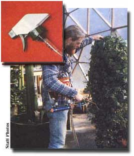
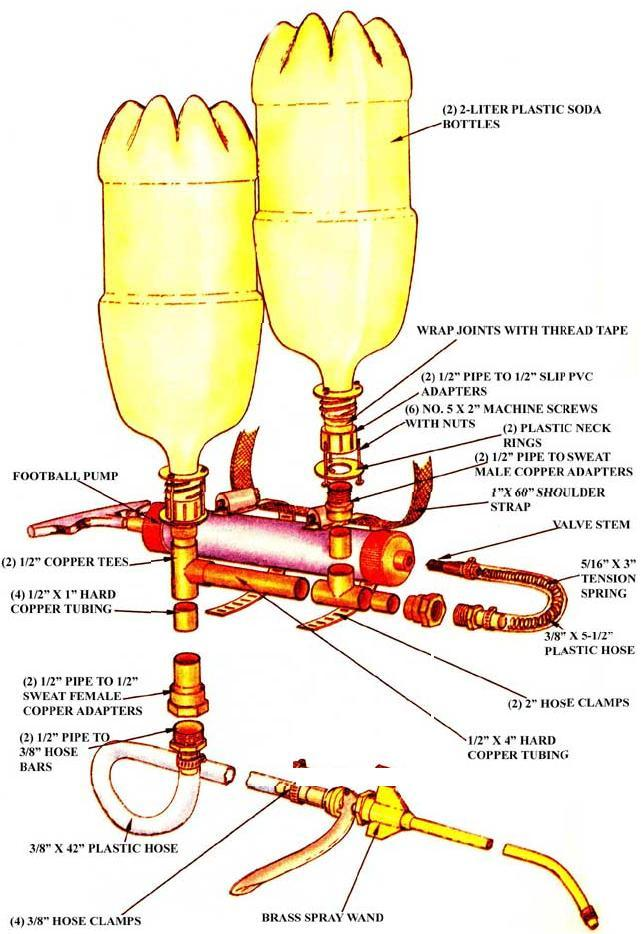

Here's a tool that works best under pressure . . . and you can make it from odds 'n' ends.
For many folks, gardening is a source of relaxation ... but it can just as well be a means of putting healthful and inexpensive produce on the table, or even the ticket to a bit of extra income. In any case, spending a lot of money in order to save (or earn) a little doesn't have to be part of the program ... and this "el cheapo" portable sprayer is definitely a minimum-investment item that nonetheless can do the job of a spritzer costing many times more.
To make it, you'll have to pillage your workshop, a trash pail, and the kids' toy box ... and your gathered booty should include [1] the 1/2" plumbing parts called for in our illustration, [2] four two-liter plastic soda bottles (which will make up the two pressurized storage canisters), and [3] a football pump. Everything else-six hose clamps, a halfdozen No. 5 X 2" machine screws and nuts, an inner tube's valve stem, two hose barbs, a tension spring, and a 4-foot length of 3/8" plastic hose-can likely be scrounged as well, or purchased for a few dollars.
We found the seat belt that became our shoulder strap in a junked Chrysler, but you can make a sling out of anything from a webbed belt to a piece of rope. Likewise (and this is a choice that'll be affected by both how much you're willing to spend and how often you plan to use your sprayer), although our "deluxe" model features a $12 brass trigger and wand, we found that the head from a bottle of Fantastik brand cleaning liquid (with its siphon tube removed) makes a pretty good nozzle that can be adjusted-or shut down-to suit your needs. (It probably wouldn't hold up as well as the metal unit, though.)
The tools required to tackle this project are equally basic: You'll need only a knife, a screwdriver, a drill with a 1/8" bit, and soldering supplies (even these can be eliminated if you choose PVC pipe and cement instead of copper plumbing components). Teflon thread tape or silicone sealant will also help to make the joints airtight.
The plumbing manifold should be assembled by using our illustration as a guide. Once that's done, you can cut a 5-1/2" length of your 3/8" plastic hose and trim down the valve stem so the tubing can be clamped over it. By threading the stem into the football pump, pressing the spring inside the hose, and clamping the free end to the barb at the long end of the manifold, you can assure a kink-free connection between the air source and the storage tanks.
Then, to hold everything together as a unit, merely lash the manifold to the side of the pump with your 2"-diameter hose clamps ... and, if possible, use these same fasteners to secure your carrying strap. The remaining 3-1/2 feet (or so) of plastic tubing can be clamped to the free hose barb and to the spray nozzle of your choice.
The storage tanks are a cinch to make. First cut the flat plastic collars from the necks of two of your salvaged pop bottles (making sure the surfaces are smooth), then drill three equidistant 1/8" holes around this pair of rings and in those that are still in place on your remaining two bottles. Now, take the 1/2" pipe/slip PVC adapters, wrap their "slip 11 ends with thread tape, and pop them into the necks of the containers. The free collars, screwed to their mates on the uncut bottles with the adapters between-will keep those canisters from "blasting off" under pressure once they're installed. (Though you probably won't be able to develop more than 25 or 30 PSI with the small hand pump-which is plenty to serve the purpose intended-you'll be pleased to know that we hydrostatically tested a number of bottles, and the average bursting pressure was almost 200 pounds per square inch!)
To use the Spartan sprayer, just fill one container with the liquid nutrient or wholistic pest spray (soapy water, for instance) of your choice, thread both in place on the manifold, sling the strap over your shoulder so the bottles are "bottoms up" under your arm, and pump away. An average charge will keep the spray going for about five minutes (or until the fluid runs out). You can, of course, use both tanks to increase capacity a bit, but do remember to leave a couple of inches of air space in each one to absorb the charge. Either way, your scrounged-from-scrapbox sprayer is sure to be a real "blast" to use ... in your garden or greenhouse.
|
 |
|
 |